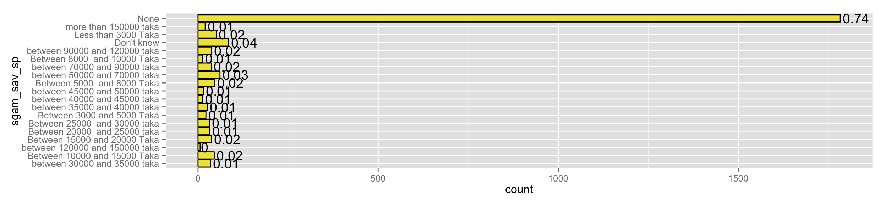
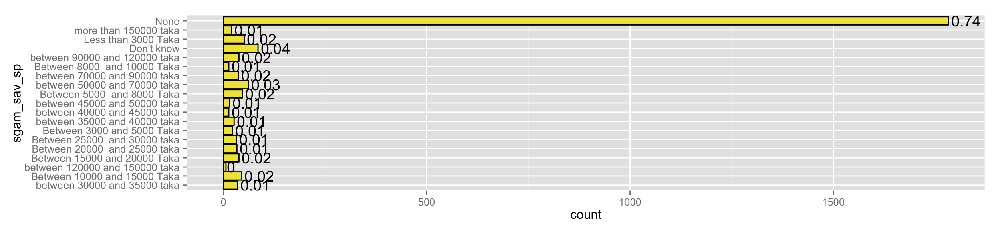
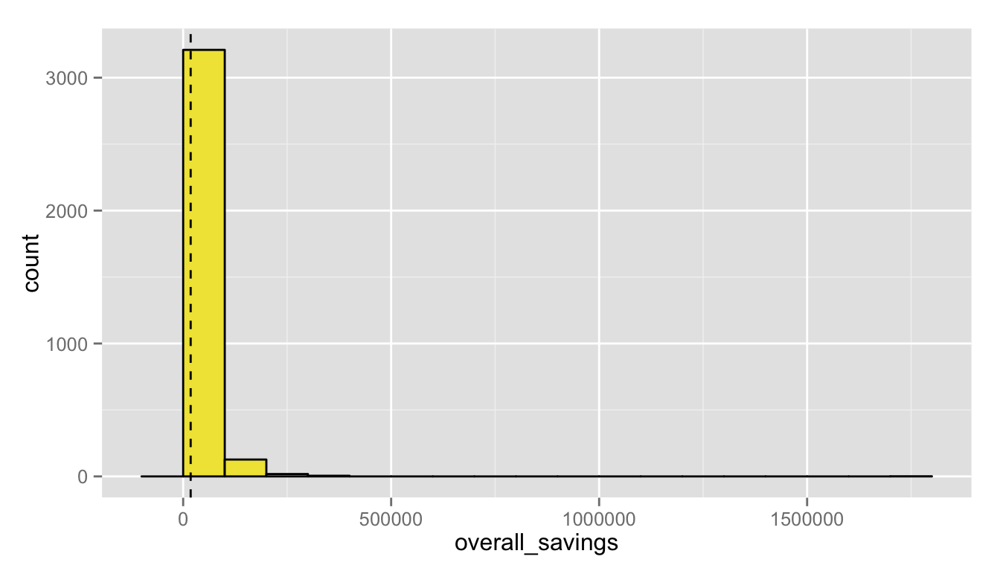
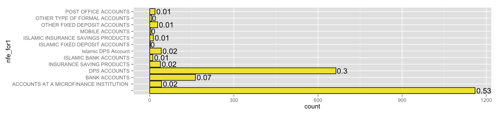
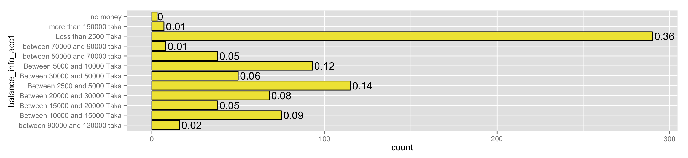

Follow-up 1 Data: Savings
Updated 08 June, 2015
means and SDs
for numeric variables
| Statistic | overall_savings |
| N | 1,884 |
| Mean | 17,684.710 |
| St. Dev. | 52,844.150 |
| Min | 0 |
| Max | 1,800,000 |
overall savings
more than half of people do no have any savings (top) and even less their spouses (bottom):  

large right skew of savings distribution, with 17K being the average: 
ladder
How good do you feel at saving? (Step 1 is really bad Step 10 is excellent):
formal savings
Do you have savings set aside in any of the following account (in your name, in your children’s name or jointly in your name and somebody else’s name)? Most choose DPS accounts* 
of the 529 respondents with formal accounts, here is the breakdown of balances:
Informal savings accounts:
of the 395 respondents with informal accounts, here is breakdown of balances: 
#sugested variables to keep:
"sgrange_sav"
"sgam_sav_sp"
"sgam_sav1":"sgam_sav17"
"sgachi_goal_gen"
"nfe_for1"
"bal_for_acc1"
"nfe_info1"
"balance_info_acc1"
#note it is not worth asking about second formal/informal accounts...
#we are only getting literally a handful of respondents mention anything